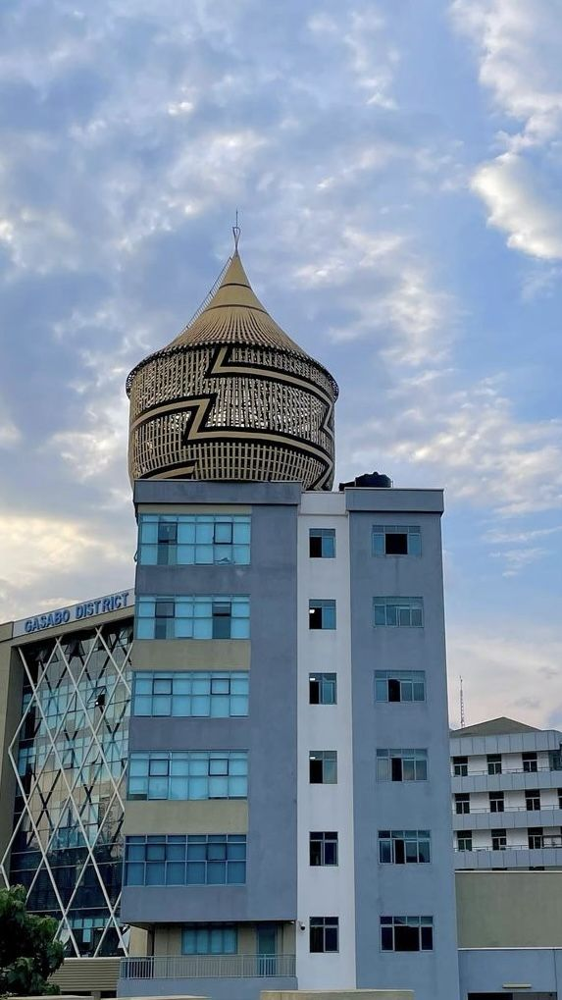

NYARUGENGE OVERVIEW
The city's commercial heart, hosting banks, and the central business district.
View more
Kigali is the capital and largest city of Rwanda, located near the center of the country. Known for its cleanliness, safety, and organization, Kigali has become a model city in Africa. It serves as the political, economic, and cultural hub of Rwanda, with modern infrastructure, vibrant markets, and a growing tech scene. The city is built on beautiful rolling hills, offering stunning views and a mild climate.
Kigali is not only a gateway to Rwanda’s iconic destinations like Volcanoes National Park, but also a symbol of the country’s remarkable progress and unity since the 1990s.
Kigali is situated at the geographical center of Rwanda with three districts namely:
- Kicukiro - Gasabo - Gasabo
Kigali was established as an administrative outpost in 1907 during the German colonial period.
It became the capital of Rwanda upon independence in 1962. The city has undergone significant development, with new infrastructure, buildings, and tourism initiatives.
The city's commercial heart, hosting banks, and the central business district.